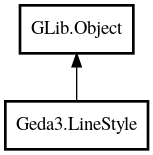

LineStyle
Object Hierarchy:

Description:
public class LineStyle : Object
The line style for graphic items
Since the line style does not change the bounds of the object, items can use the notify signal from these properties to determine when to
invalidate.
Content:
Properties:
Creation methods:
Methods:
Inherited Members:
All known members inherited from class GLib.Object
- interface_find_property
- interface_install_property
- interface_list_properties
- @new
- new_valist
- newv
- new_with_properties
- add_toggle_ref
- add_weak_pointer
- bind_property
- connect
- constructed
- disconnect
- dispose
- dup_data
- dup_qdata
- force_floating
- freeze_notify
- @get
- get_class
- get_data
- get_property
- get_qdata
- get_type
- getv
- is_floating
- notify_property
- @ref
- ref_sink
- replace_data
- replace_qdata
- remove_toggle_ref
- remove_weak_pointer
- @set
- set_data
- set_data_full
- set_property
- set_qdata
- set_qdata_full
- set_valist
- setv
- steal_data
- steal_qdata
- thaw_notify
- unref
- watch_closure
- weak_ref
- weak_unref
- notify
- ref_count